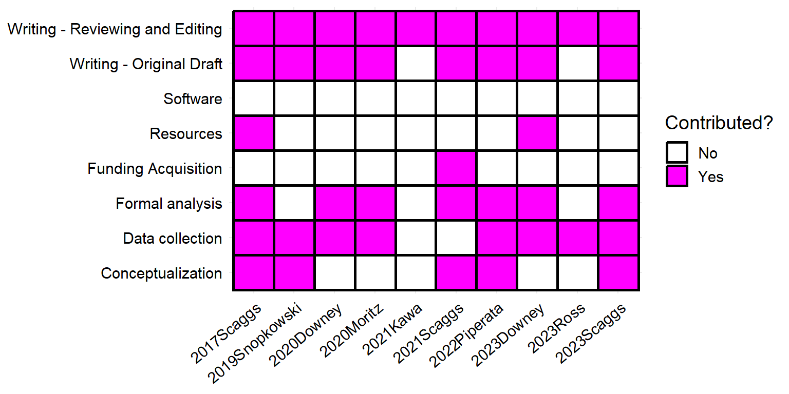

| Year | Institution | Program | Degree |
|---|---|---|---|
| 2021 | Ohio State University | Anthropology | PhD candidate |
| 2018 | Oregon State University | Applied Anthropology | Master of Science |
| 2016 | Boise State University | Anthropology | Bachelor of Science |
Shane A. Scaggs
Graduate Research Fellow
Human Complexity Lab
Department of Anthropology
The Ohio State University
scaggs.32@osu.edu
Research Interests
Human Subsistence \(\times\) Cooperation and Interspecies Coexistence \(\times\) Dietary Diversity \(\times\) Food Webs \(\times\) Network Science \(\times\) Complex Social-Ecological Systems \(\times\) Community and Wildlife Ecology
Education
Publications
| Year | Citation |
|---|---|
| in prep | Scaggs, S. A., Nabors, S., Syed, Z., Rongjun, Q., Downey, S. S., (in prep). A comparative analysis of the swidden agriculture, landscape structure, and ecosystem enhancement. Philosophical Transactions of the Royal Society B. NA |
| in review | Ross, C. T., Hooper, P., Smith, J. E., [and 101 others, including Scaggs, S., A.] (in review) Reproductive Inequality in Humans and Other Mammals. Proceedings of the National Academy of Sciences. NA |
| in review | Downey, S. S., Walker, M., Moschler, J., Penados, F., Peterman, W., Rongjun, Q., Scaggs, S. A., Song, S. (in review). Intermediate-scale swidden disturbances increase canopy tree diversity in remotely-sensed images of Indigenous Maya community forests. Nature Sustainability. NA |
| 2022 | Piperata, B., Scaggs, S., Dufour, D., Adams, I. (2022) Measuring food security: An introduction to tools for human biologists and ecologists. American Journal of Human Biology. https://doi.org/10.1002/ajhb.23821 |
| 2021 | Scaggs, S., Gerkey, D., McLaughlin, K. (2021). Linking subsistence harvest diversity and productivity to adaptive capacity in an Alaskan food sharing network. American Journal of Human Biology. Special Issue: Anthropological Insights on Adaptation and Climate Change, Vol. 33 (4): e23573. https://doi.org/10.1002/ajhb.23573 |
| 2021 | Kawa, N., Arceno, M. A., Goeckner, R., Hunter, C., Rhue, S., Scaggs, S., Biwer, M., Downey, S., Field, J., Gremillion, K., McCorriston, J., Willow, A., Newton, E., Moritz, M. (2021). Training Wicked Scientists for a World of Wicked Problems. Humanities & Social Sciences Communications. Vol. 8 (189). https://doi.org/10.1057/s41599-021-00871-1 |
| 2020 | Downey, S., Gerkey, D., Scaggs, S. (2020). The Milpa Game: a field experiment investigating the social and ecological dynamics of Q'eqchi' Maya swidden agriculture. Human Ecology, Vol. 48: 423-438. https://doi.org/10.1007/s10745-020-00169-x |
| 2020 | Moritz, M., Scaggs, S., Shapiro, C., Hinkelman, S. (2020). Comparative Study of Territoriality across Forager Societies. Human Ecology, Vol. 48: 225-234. https://doi.org/10.1007/s10745-020-00141-9 |
| 2019 | Snopkowski, K., Demps, K., Scaggs, S., Griffiths, R., Fulk, K., May, S., Neagle, K., Downs, K., Eugster, M., Amend, T., Heath, J. (2019). Small Group Learning is Associated with Reduced Salivary Cortisol and Testosterone in Undergraduate Students. Journal of the Scholarship of Teaching and Learning, Vol. 19 (5): 36-52. https://doi.org/10.14434/josotl.v19i5.24230. |
| 2017 | Scaggs, S. A., Fulk, K., Glass, D. J., Ziker, J. P. (2017) Framing charitable solicitation in a behavioral experiment: Cues derived from evolutionary theory of cooperation and anthropological economics. In Li, M., Tracer, D. P. (eds.) Interdisciplinary Perspectives on Fairness, Equity, and Justice, 153-178. Springer. https://doi.org/10.1007/978-3-319-58993-0_10 |
Contributions

Funding Support
| Year | Title | Funding Agency | Amount |
|---|---|---|---|
| 2021 | Doctoral Dissertation Research Improvement Grant (DDRIG) | Cultural Anthropology Program, National Science Foundation | $20,000 |
| 2019 | Daniel T. Hughes Memorial Fund | Department of Anthropology, The Ohio State University | $300 |
| 2019 | Pre-Dissertation Field Research Grant | Tinker Foundation, College of Latin American Studies, The Ohio State University | $1,750 |
| 2018 | Graduate Research Fellowship (GRF) | Graduate Research Fellowship Program, National Science Foundation | |
| 2018 | Graduate Research and Writing Residency | Spring Creek Project, Oregon State University | $250 |
| 2015 | Special Undergraduate Recognition Award | Evolutionary Anthropology Society, American Anthropology Association | $250 |
Conference Proceedings
| Year | Title | Meeting | Type |
|---|---|---|---|
| 2021 | The Importance of Humans in Neotropical Food Webs | Fall Forum 2021, Translational Data Analytics Institute | Poster |
| 2021 | Subsistence harvest diversity, social networks, and adaptive capacity to environmental change in Alaska. | 90th American Association of Physical Anthropologists | Invited Symposium |
| 2019 | Playing 'The Milpa Game': Using field experiments to investigate common pool resource dilemmas in Toledo District, Belize | 118th American Anthropological Association | Podium |
| 2018 | Subsistence harvest productivity and biodiversity in Alaskan social networks | 117th American Anthropological Association | Podium |
| 2018 | Exponential random graph modeling of productivity, diversity, and reciprocity in Alaskan food sharing networks | 5th Northwest Evolution, Ecology, and Human Behavior Symposium | Poster |
| 2017 | Dynamic Change, Social Networks, and Harvests: Levels of Resilience in Alaska | 29th Human Behavior and Evolution Society | Poster |
| 2017 | Stress: The effects of social and solitary learning on salivary hormones | 29th Human Behavior and Evolution Society | Poster |
| 2016 | The Solicitation of Charitable Donations: Experimental Evidence from Behavioral Economic Games | Boise State University Undergraduate Research Conference | Podium |
| 2016 | Understanding Charitable Donations | Boise State University Advancement Team | Invited Talk |
| 2016 | Endocrine stress response in college students to solitary and group learning | 4th Northwest Evolution, Ecology, and Human Behavior Symposium | Poster |
| 2016 | Four Pathways to Generosity | 4th Northwest Evolution, Ecology, and Human Behavior Symposium | Poster |
| 2015 | Four Pathways to Generosity: Evolutionary Mechanisms Differentially Affect Charitable Donations | 114th American Anthropological Association | Podium |